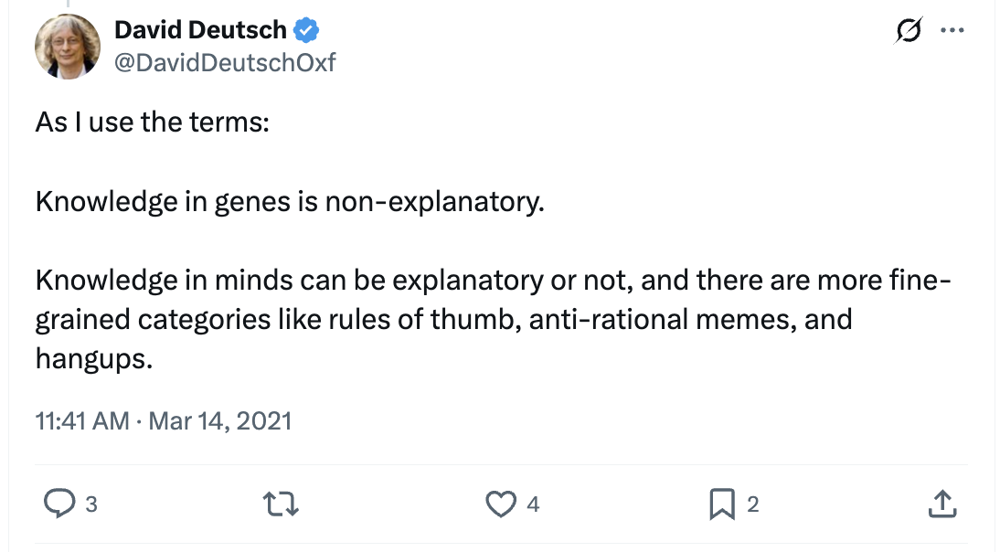
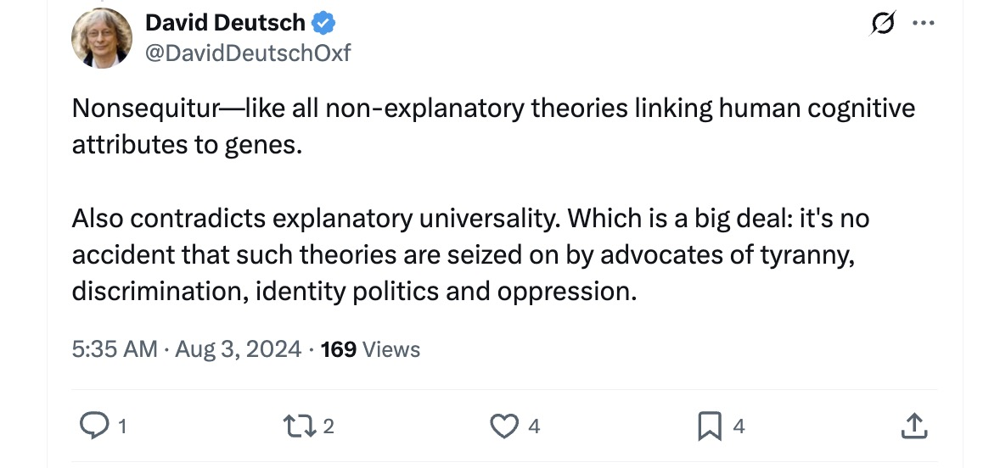
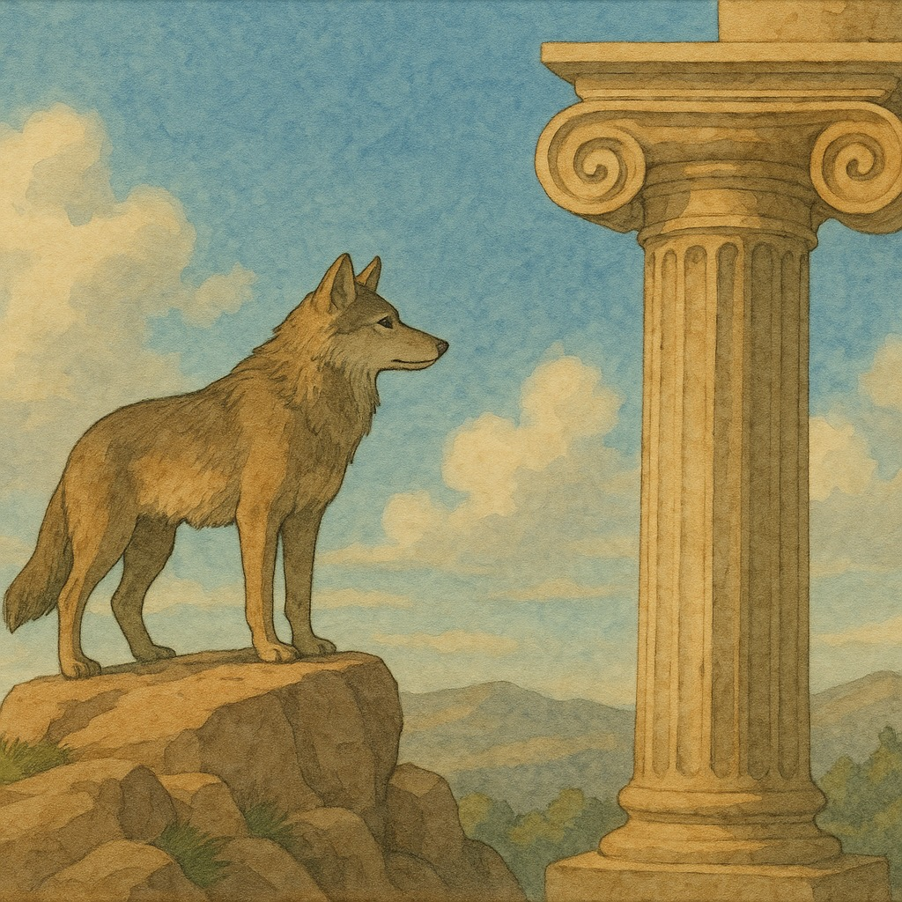
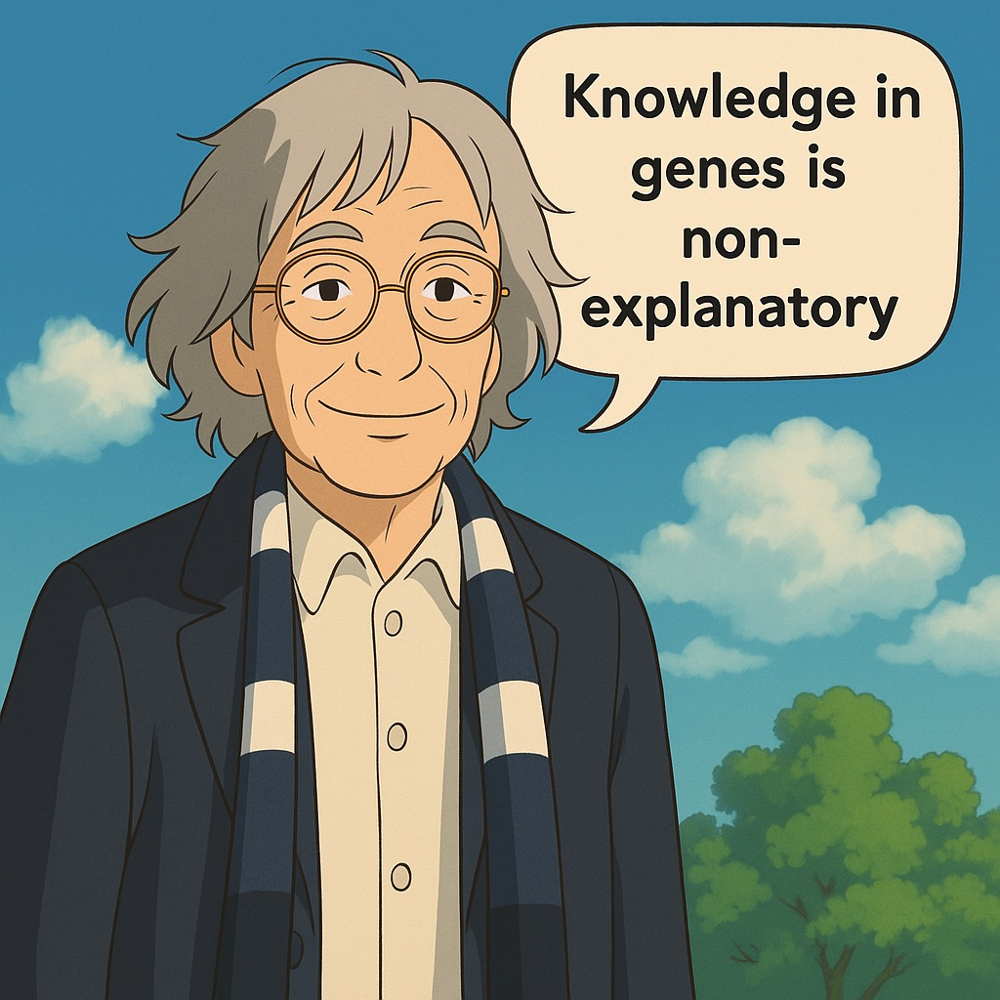
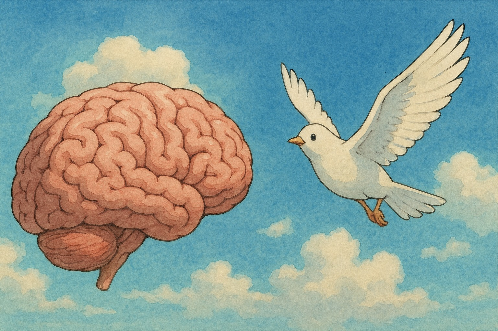
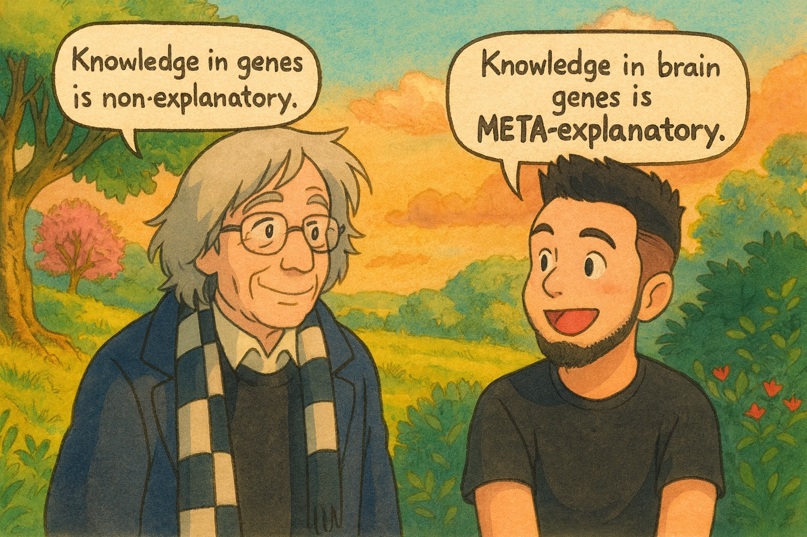
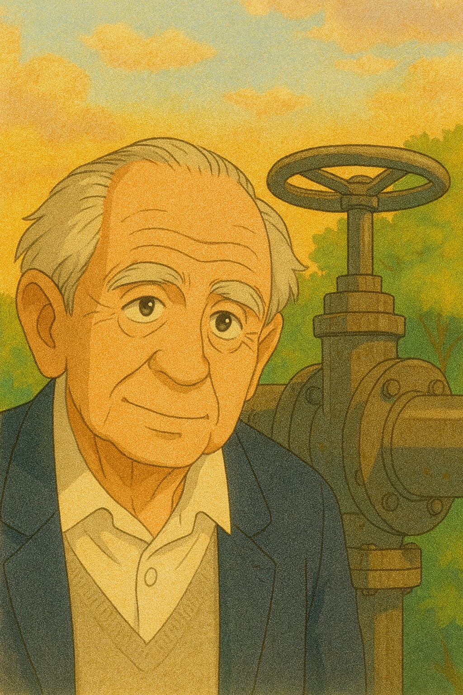
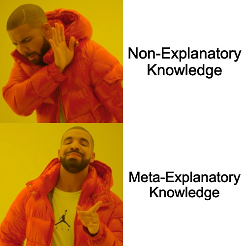

IQ: The Good, the Bad, and the Popperian
🧠⚡
Paul Berg
Sep 27, 2025 @ RatFest
Personal Background
- 👔 Co-Founder and CEO @ Sablier Labs
- 👨💻 Software engineer for 11+ years
- 📖 Studying David's work for 4+ years, as a hobby
"What has David said about this?"



👍 The Good
- Genes alone do not explain human behavior and cognitive results
- Culture and memetic evolution play a bigger role than genes (chapter 15)
👎 The Bad


💡 The Popperian
Knowledge in brain genes contain meta explanatory knowledge

🔩 A "Valve" of Conjecture Generation
IQ is the rate at which conjectures are generated

💭 Intuition Pump
Human in a Vat
🎂 Explanatory Cake
Genes and memes are like a cake of explanatory knowledge
🧑🦳 Life of Conjectures
- Genes are involved in the number of conjectures a person generates throughout their lifetime
- If two people both live 80 years ...and one has an IQ of 80 and the other an IQ of 120, the latter will generate a lot more conjectures and hence more explanations
- Thus, IQ genes are 'meta-explanatory'
